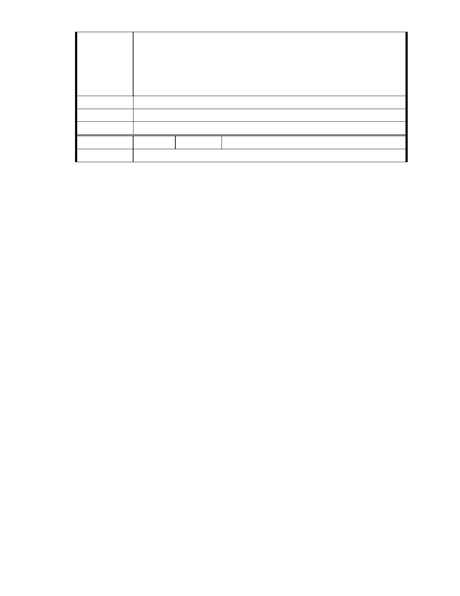

的，作為社會福利與環境教育使用，促進內湖地區愛心拓展與生態維護
並重的福利園區。本人希望市府儘快核准慈濟內湖園區申請改善案，以
便慈濟早日將它變成一個充滿森林花草樹木的生態園區並富有愛心的一
個園地。
感恩.
建議辦法
市 府 說 明 相關陳情意見將納入本案審查人民意見，依法定程序辦理。
委 員 會 決 議 同編號 1。
編
號
202
陳情人
祥和法律事務所、SC201301090010
陳情理由
- 252 -